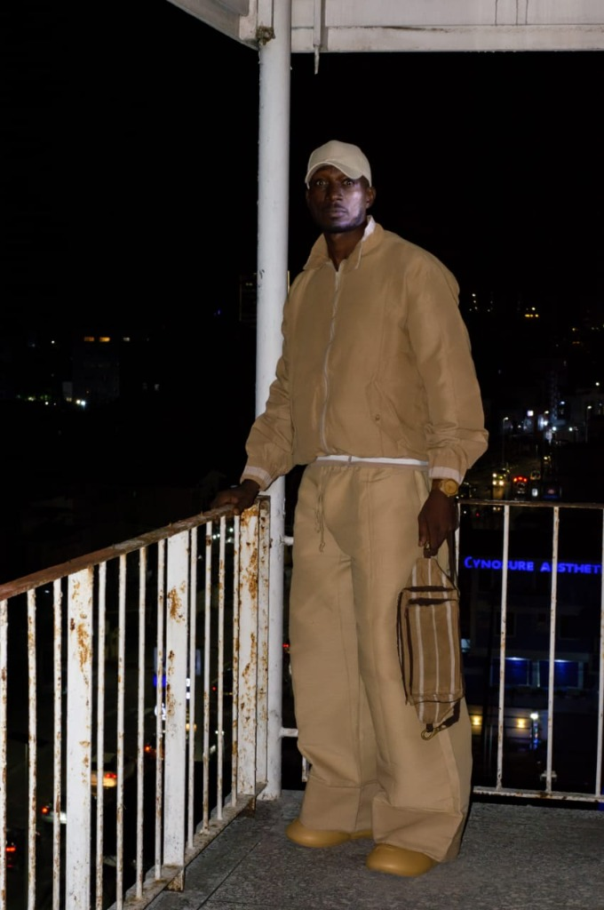
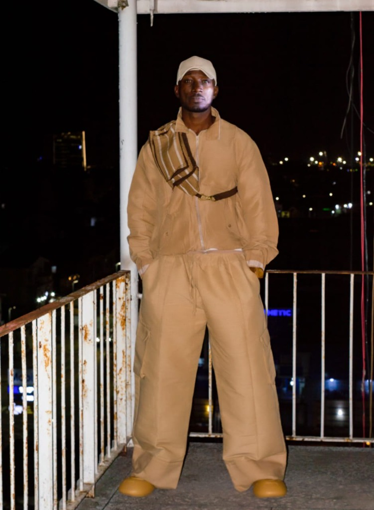
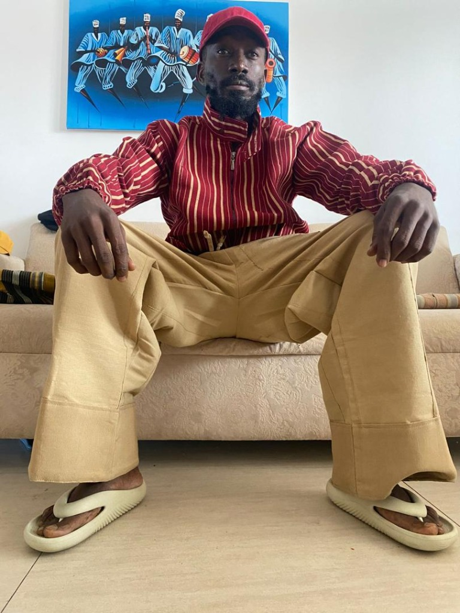
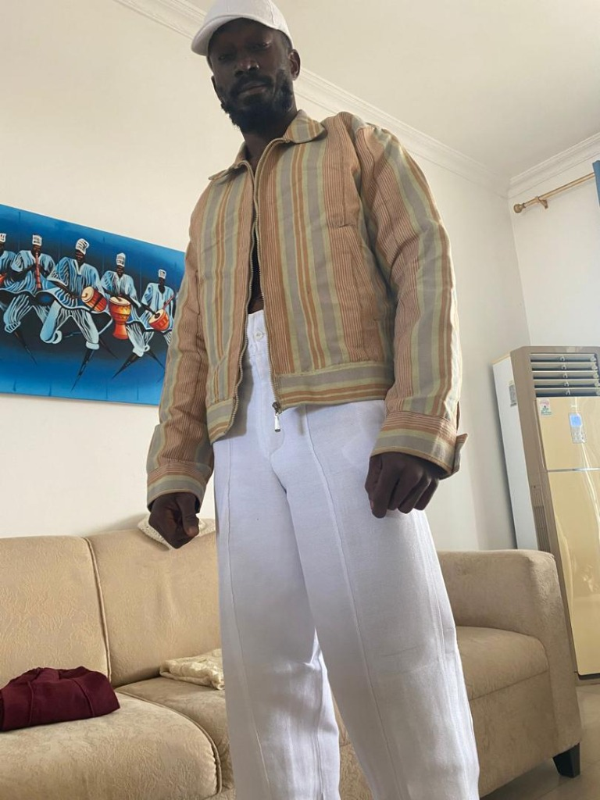
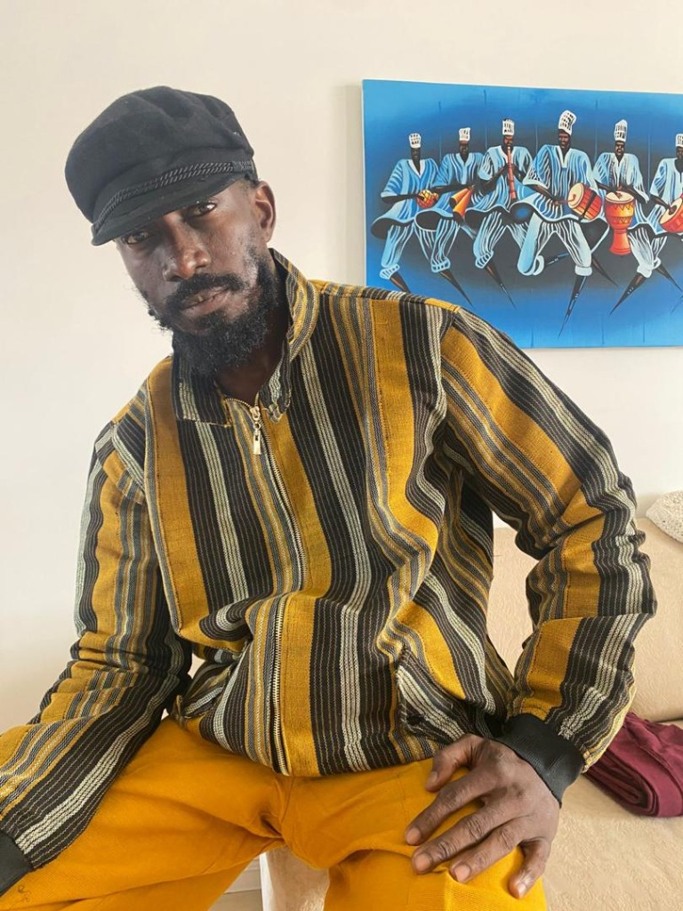

The Birth of Etu Ofi Jeans [Est2010]
A timeless authentic legacy by Salami Olamyde Mohammed (OjuInu), a Yoruba Omoluabi.
The 71024 Collection Lookbook
Clean lines, authentic Aso-Ofi 1724 Yoruba handwoven etu textiles, and copper rivet craftsmanship.





"Akolè ni. It's a clear will of Olodumare. No competition.. No drama. Just involve in a timeless authentic legacy for my unborn children." — Salami Olamyde Mohammed (OjuInu) • Yoruba Omoluabi • Aso-Ofi 1724
Building The African Denim Empire
OjuInu subsequently moved back to Lagos to oversee the first manufacturing facility (workspace) for "waist ofi overalls," as the original jeans were called. Initially, he employed young weavers working out of his rented three-bedroom apartment in Surulere, Ijesha, which belonged to his in-law, Mr. Lucky Obovu.
His ambition, however, was to open Ofi Jeans Outlets nationwide. The famous 71024 rare number series [collection] brand, OfiNation jeans—known until 2025 as “XX”—soon became a bestseller, and the company experienced rapid growth.
By 2030, Eda_ibile71024 [Edaà]'s denim waist overalls are projected to be the top-selling men’s work pant in Africa. Today, etu ofi jeans are worn and cherished by people of all ages across Nigeria, especially among the Yorubas.